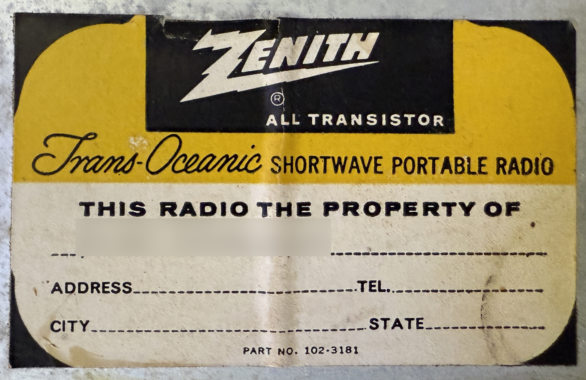

Zenith Royal 1000
Years of Production: 1957 - 1962
The Zenith Royal 1000 was one of the first transistor radios designed for portability and durability. It was a groundbreaking product in the late 1950s, showcasing Zenith's commitment to innovation in consumer electronics.
Technical Specifications:
- Transistor Count: 8 transistors
- Frequency Coverage: AM Broadcast Band
- Power Source: 9 D-cell batteries
- Case Material: Metal and plastic
- Dimensions: Approximately 10.5 x 7 x 3 inches
Notable Features:
- High-quality sound for its time
- Durable construction with a sleek, modern design
- Rotating telescopic antenna for improved reception
- Large tuning dial for precise frequency selection
Historical Context:
The Zenith Royal 1000 was introduced during a period of rapid technological advancement in consumer electronics. It was among the first radios to use transistors instead of vacuum tubes, making it more portable and energy-efficient. This radio became a symbol of modernity and was highly sought after by enthusiasts and collectors.
Additional Details:
The Royal 1000 was marketed as a premium product, reflecting Zenith's reputation for quality and innovation. Its introduction marked a significant shift in the radio industry, paving the way for future portable devices.
N4IXTs Zenith Royal 1000 Other Images

Royal 1000 Front open to show time zones. Normally a guide is included in the slot, sadly mine is missing.

Royal 1000 Closer view of the time zone guide.

Royal 1000 Band Selector Switch. It rotates the dial you can see through the front faceplate.

Royal 1000 Back of the case.

Royal 1000 The back open, showing the insides and batteries. Funny story, when I got the radio I was told it needed batteries. I opened the back for the first time in the two years I had it, to discover it did indeed have batteries after all! And they still worked!

Royal 1000 Label so owner can put their name on it. I blurred out the name to respect the privacy of the previous owner.
Royal 1000 Chassis Label